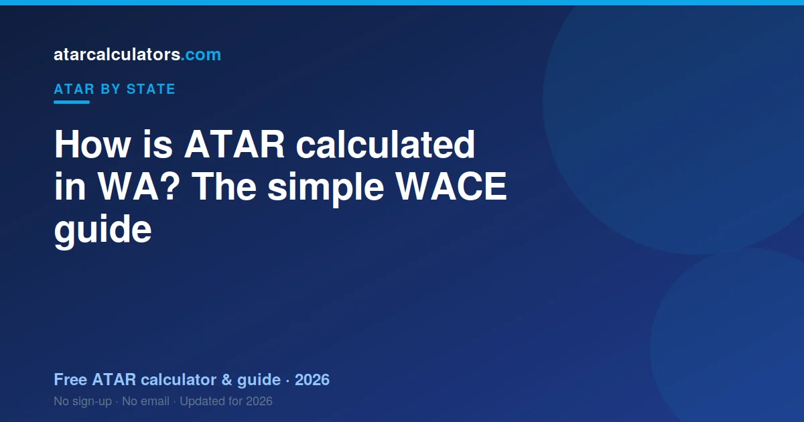

In Western Australia, your ATAR is built from your scaled WACE results. TISC takes your best four scaled ATAR course scores and adds them up. This total is your Tertiary Entrance Aggregate (TEA), out of a maximum of about 430. TISC then ranks your TEA against your age group and turns it into an ATAR between 0.00 and 99.95. You also need to meet an English competency rule to get an ATAR at all.
Key takeaways
- Your ATAR is a rank from 0.00 to 99.95. It is not an average of your marks.
- It comes from your best four scaled ATAR course scores, added into a TEA.
- The TEA has a maximum of about 430. A higher TEA means a higher ATAR.
- TISC scales your scores and works out your ATAR. SCSA runs the WACE.
- You must meet an English competency rule to receive an ATAR.
- The same ATAR is used by universities across Australia, not just in WA.
- You can estimate your ATAR early with a calculator, then plan from there.

An ATAR is a rank, not a mark
Your ATAR is a rank. It shows where you sit compared to other students your age in WA. It is not the average of your marks.
Think of it as a line-up. Every student your age stands in a line, from lowest to highest. Your ATAR shows your spot in that line. An ATAR of 90.00 means you are near the top, ahead of about 90% of your age group.
The scale runs from 0.00 to 99.95. It moves in steps of 0.05. The lowest number normally reported is 30.00. Anything under that shows as ‘less than 30’.
Because it is a rank, two students with the same marks can still land in different spots. Scaling and subject choice both play a part. We explain both below. You can also try our WA ATAR calculator to see an estimate for your own subjects.
What WACE is and how you qualify
WACE stands for the Western Australian Certificate of Education. It is the certificate you earn at the end of Year 12. The School Curriculum and Standards Authority, or SCSA, runs it.
To get your WACE, you need to meet a few rules. You must pass enough courses over Year 11 and Year 12. You must also meet a literacy and numeracy standard. Most students do this through the OLNA test or a strong NAPLAN result in Year 9.
WACE and your ATAR are not the same thing. You can achieve WACE without an ATAR. But to get an ATAR, you need to sit ATAR courses with exams. Most students take four or five ATAR courses for this reason.
How your Tertiary Entrance Aggregate is built
The number behind your ATAR is called the Tertiary Entrance Aggregate, or TEA. TISC builds it from your scaled scores.
Here is the process in plain steps. First, you sit your ATAR courses and get a mark in each. Next, TISC scales each mark (more on that below). Then TISC picks your best four scaled scores. Finally, it adds those four scores together. That total is your TEA.
- Each scaled score can reach up to about 100 points, and some can scale a little higher.
- Your best four scores are added, so the TEA has a maximum of around 430.
- You can add small bonus increments for some language and maths courses, which lift your TEA.
A higher TEA means a higher ATAR. TISC uses a conversion table each year to turn your TEA into an ATAR. You do not need to know the exact table. You just need to know that more scaled points move you up the rank.
A simple worked example
Let us walk through a made-up student to see how it fits together. Call her Mia. Mia sits five ATAR courses.
After scaling, her five scores are 82, 78, 75, 71 and 64. TISC drops her lowest score, the 64. It keeps her best four: 82, 78, 75 and 71.
TISC adds those four together. That gives a TEA of 306. TISC then checks its conversion table for the year and finds the matching ATAR.
Notice two things. Her weakest subject did not count, because only her best four are used. And every one of her top four still mattered, because they were all added in. This is why steady results across several subjects help so much.
How WACE scaling works
Scaling keeps things fair between subjects. A mark of 80 in one subject is not always as hard to earn as 80 in another. Scaling adjusts for that.
TISC scales each subject by looking at the whole group who took it. If a subject is full of high-achieving students, it tends to scale up. If a subject has a weaker overall group, it can scale down.
This is about the group, not you alone. You do not get scaled up just for picking a ‘hard’ subject. You get a fair score based on how your subject group performed across all their subjects.
So chasing an ‘easy’ subject can backfire. The smarter move is to do well in subjects you are strong in. See our guide to the best scaling subjects in WA for how this plays out.
The English competency rule
WA has one rule that catches some students by surprise. To get an ATAR, you must show English competency. This is separate from your TEA.
You usually meet it by reaching the required standard in an English ATAR course. That often means a scaled score of at least 50 in English, Literature, or English as an Additional Language or Dialect (EALD).
If you do not meet it, you can still get your WACE. But you will not receive an ATAR. So it is worth checking early that your English course puts you on track. Always confirm the current rule on the TISC website.
Courses and prerequisites you need
Your ATAR gets you considered for university. But many courses also ask for specific subjects, called prerequisites.
For example, an engineering degree often needs Mathematics Methods, and sometimes Physics. A science degree may need Chemistry. If you skip a prerequisite, a high ATAR may still not be enough for that course.
So plan backwards from the course you want. Check its prerequisites now, while you can still choose subjects. WA has five main universities to consider: UWA, Curtin, Murdoch, Edith Cowan, and Notre Dame.
Who does what: SCSA, TISC and your school
Three groups play a part in your ATAR. It helps to know who does what.
SCSA runs the WACE. It sets the courses, runs the exams, and reports your results. Your school teaches the courses and runs your school-based assessments.
TISC then takes over for the ATAR. It scales your scores, builds your TEA, and works out your ATAR. It also manages university applications in WA. For a full breakdown, see our guide to what TISC does.
Is a WA ATAR used interstate?
Yes. The ATAR is one national rank. A WA ATAR is read the same way as an ATAR from any other state.
This means you can use your WA ATAR to apply for courses in other states. Students from other states can also use their ATAR to apply in WA. The rank travels with you.
Common mistakes students make
A few simple mistakes cost students marks every year. Here are the ones to avoid.
- Picking subjects only for scaling. If you are not strong in a subject, a good scaling year will not save you.
- Forgetting the English rule. Some students meet their TEA but miss the English competency standard, and get no ATAR.
- Ignoring prerequisites. A high ATAR is wasted if you skipped a subject your course required.
- Taking too few ATAR courses. You need at least four scaled scores, so taking only four leaves no safety margin.
None of these are hard to avoid. They just need a little planning early in Year 11.
Bonus points and adjustment
Your ATAR is not always the final number a university uses. Many WA universities add adjustment points, sometimes called bonus points.
These points lift your selection rank, which sits on top of your ATAR. You might earn them for where you live, for certain subjects, or for tough personal circumstances.
So a course with a cutoff of 80 might still be reachable with an ATAR just under 80, once adjustments apply. It is worth checking what you qualify for. Our selection rank calculator and bonus points calculator show how the numbers change.
What happens on results day
Your WACE results and your ATAR come out in late December. SCSA releases your subject results. TISC releases your ATAR through its online portal.
After that, university offers arrive in rounds, starting in January. If you do not get your first choice straight away, later rounds still run for courses with places left.
For the exact dates each year, see our WA ATAR release date guide, and always confirm on the TISC site close to the time.
Estimate your WA ATAR
The best way to understand all this is to try it with your own numbers. Our free WA ATAR calculator lets you enter your scores. It then shows an estimated ATAR using the same best-four structure.
No estimate can be exact before results day. Scaling depends on the whole group, and that is only known after exams. So treat any estimate as a guide, not a promise.
Still, an early estimate is useful. It shows you if you are on track for your goal. If there is a gap, you have time to act on it.
The English competency requirement
To be eligible for the WACE, you must meet an English language competency standard, alongside completing the required courses. This is a WACE requirement rather than part of the ATAR calculation, but it matters, because without the WACE you cannot receive an ATAR through the usual pathway.
Most students meet the standard through their English course results or the relevant literacy assessment. If you are unsure whether you are on track to meet it, check with your school early, since it is far easier to address in advance than at the last minute.
How a WA ATAR compares interstate
Although WA calculates your ATAR through TISC using WACE results, the ATAR itself is national. An ATAR of 90 from WA means the same thing as an ATAR of 90 from any other state: you finished ahead of about 90 percent of the relevant age group.
So a WA ATAR is directly comparable to an interstate one, and it is recognised by universities across Australia. If you plan to study in another state, your WA ATAR travels with you and is assessed the same way as a local one.
Common questions
How many subjects do you need for a WA ATAR?
Your ATAR uses your best four scaled ATAR course scores. So you need at least four ATAR courses. Most students take five, which gives a safety margin if one subject goes poorly.
Who calculates the WA ATAR?
TISC calculates the WA ATAR. It scales your WACE scores, adds your best four into a TEA, and ranks that into an ATAR. SCSA runs the WACE and reports your subject results.
What is a TEA in WA?
TEA stands for Tertiary Entrance Aggregate. It is the sum of your best four scaled ATAR course scores, out of a maximum of about 430. Your ATAR comes from your TEA using a yearly conversion table.
How does WACE scaling work?
TISC scales each subject by how strong its group of students was that year. Subjects with many high-achieving students tend to scale up. Scaling keeps subjects fair, so no choice is unfairly rewarded or punished.
What is the highest WA ATAR?
The highest ATAR is 99.95. This matches the top of the rank. ATARs run down to 30.00, and results below that are reported as 'less than 30'.
Do I need English for a WA ATAR?
Yes. You must meet an English competency rule to receive an ATAR. You usually do this by reaching the required standard in an English ATAR course, often a scaled score of 50 or more.
Is a WA ATAR treated the same interstate?
Yes. The ATAR is a national rank, so a WA ATAR is read the same way in every state. You can use it to apply for courses anywhere in Australia.
Can I estimate my ATAR before results?
Yes. A calculator can give you an estimate from your expected scores. It cannot be exact, because scaling depends on the whole cohort, but it is a useful guide for planning.